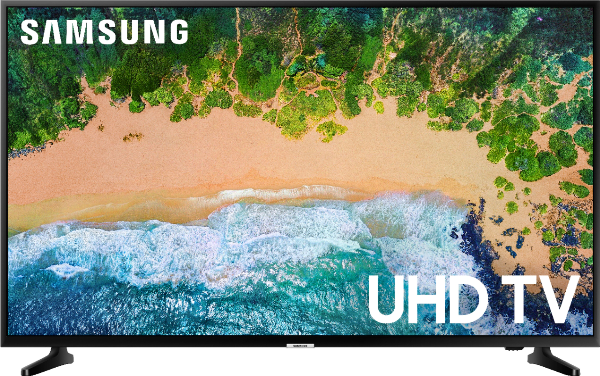

Featured snippet from the web
It rocks a 9th-generation quad-core Intel Core i5 processor (CPU), 8GB of 2,666MHz memory (RAM) and a 256GB PCIe solid-state drive (SSD) behind a 15.6-inch FHD (1,920 x 1,080) screen
Iphone 11
$1499.9
The iPhone 11 succeeds the iPhone XR, and it features a 6.1-inch LCD display that Apple calls a "Liquid Retina HD Display." It features a 1792 x 828 resolution at 326ppi, a 1400:1 contrast ratio, 625 nits max brightness, True Tone support for adjusting the white balance to the ambient lighting, and wide color support .
Samsung Tablet
$999.9
Search Results
Featured snippet from the web
The Samsung Galaxy Tab is a line of Android-based tablet computers produced by Samsung Electronics. ... The Wi-Fi versions of the tablet all include a GPS system while the 3G/4G tablets include cellular capability as well.

Samsung TV
$1499.9
A smart TV uses your home network to provide streaming video and services on your TV, and smart TVs use wired Ethernet and built-in Wi-Fi to stay connected. Most current TVs support 802.11ac Wi-Fi, but watch for older models, which may still use the older 802.11n standard.